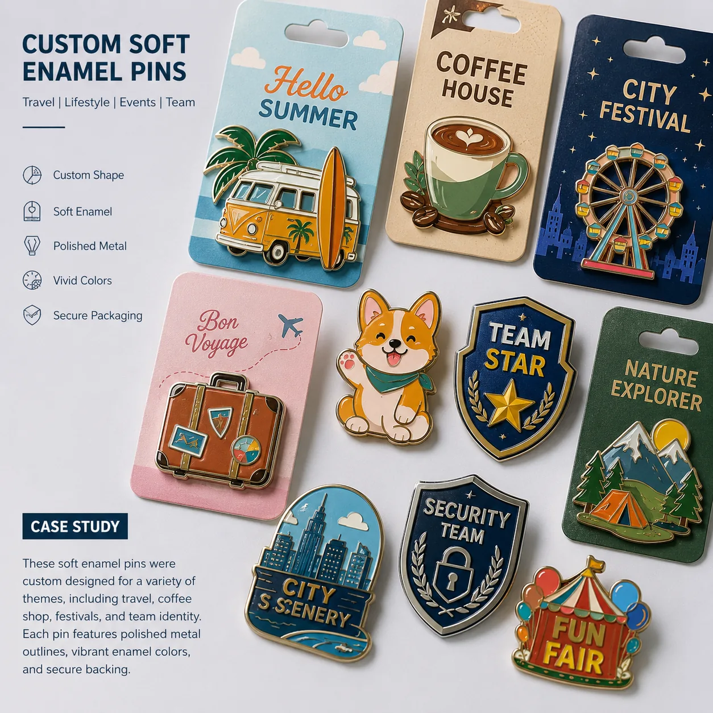

Corporate pin project
Company lapel pins with enamel color, polished plating and backing cards.
A corporate buyer needed custom logo pins for event teams, staff recognition and branded merchandise with consistent color and clean retail presentation.

Project requirements
Corporate pins need color accuracy and easy distribution.
The artwork used a compact logo with several enamel colors. Backing card packing was chosen so the pins could be handed out at events and stored by department after delivery.
- Product type: company lapel pins and custom logo pins.
- Process: soft enamel, hard enamel or die struck metal.
- Finish: gold, nickel, black nickel or antique plating.
- Backing: butterfly clutch, rubber clutch, magnet or safety pin.
- Packing: custom backing card, barcode label or bulk bag.
Quote focus
Best for staff events, retail cards and brand campaigns.
Company lapel pin buyers should send the logo file, target size, preferred finish, packing method and quantity per design.
Logo clarity
Simple artwork converts better into small pin shapes with clear metal lines.
Color matching
Enamel colors are confirmed during artwork and sample approval.
Distribution
Backing cards and labels make event distribution easier.
FAQ
Company lapel pin questions.
Are soft enamel pins suitable for company lapel pins?
Yes. Soft enamel works well for bright logo color, raised outlines and event quantities.
Can company pins be packed on backing cards?
Yes. Custom backing cards, individual bags and retail-ready packing are available.
Can the same logo use different finishes?
Yes. One artwork can be quoted with gold, nickel, black nickel or antique finish options.
Related product pages
Turn this case into a quote-ready product brief.
Use the product pages to confirm material, plating, attachment, packaging and sample requirements.